Getting Started¶
GSKY can be used with many different OGC compatible clients.
Want to try it out?
Below is a short video demonstrating how to add GSKY layers to TerriaJS.
TerriaJS¶
TerriaJS is an open-source framework for web-based geospatial catalog explorers. The TerriaJS portal is target software that is used by some major projects NCI collaborates with:
As an example, we can add MODIS Fractional Cover time series as a single layer to the GEOGLAM RAPP map. The GEOGLAM data portal contacts the GSKY server to provide a monthly MODIS fractional cover layer with three bands. This MODIS FC time series dates back to 2001:
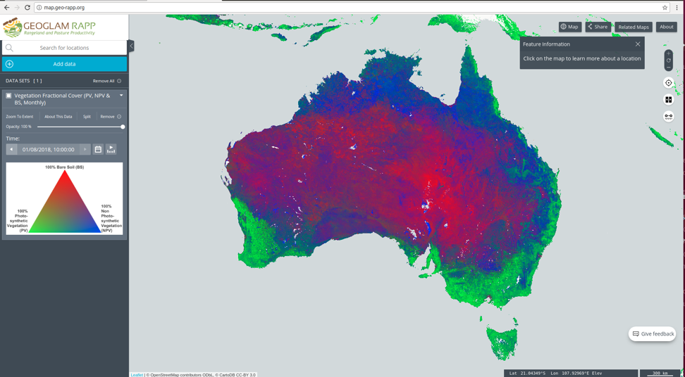GSKY also provides access to data subsets (e.g., group of variables of interest) as data layers:
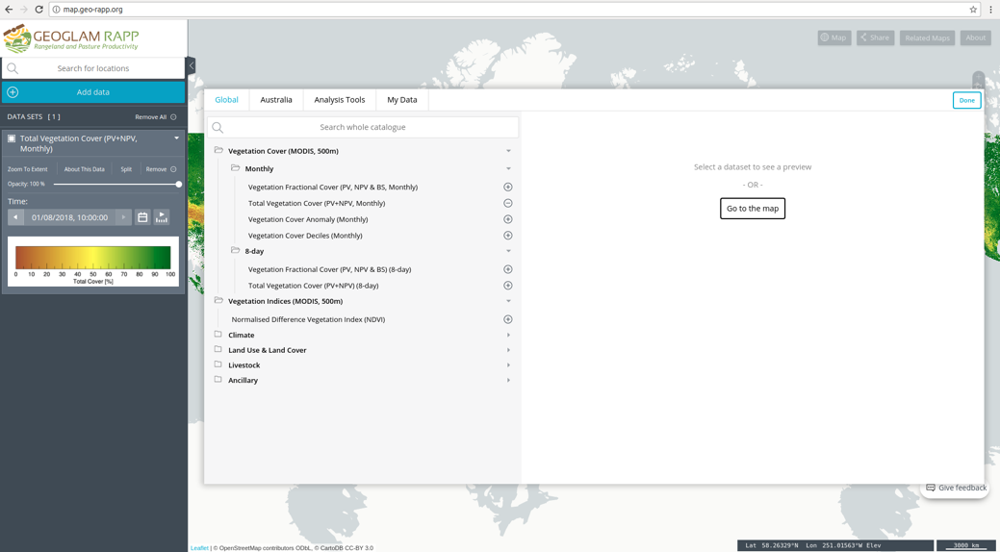GSKY is able to serve multiple layers simultaneously overlaying on top of each other for comparative analysis:
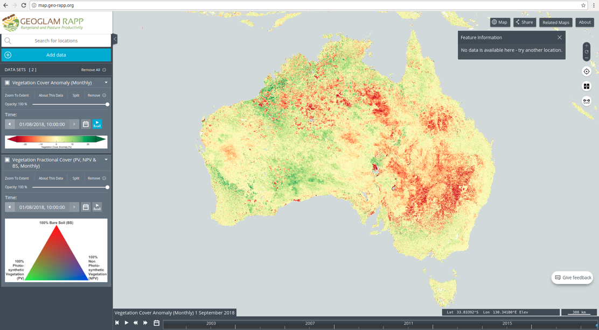GSKY can provide the same layer for different points of time allowing cross- sectional analysis:
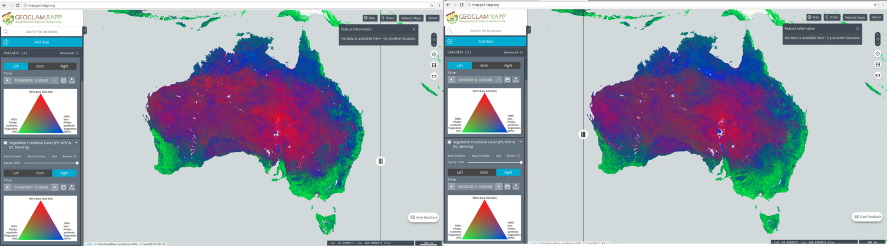Above we see a comparison of fractional coverage between August 2018 (left) and August 2017 (right). Note the increase of fractional coverage around Perth and the decrease around NSW.
GSKY’s WCS service allows users to download the raw data corresponding to a user-supplied bounding box. Note the “export” button in the following screenshot:
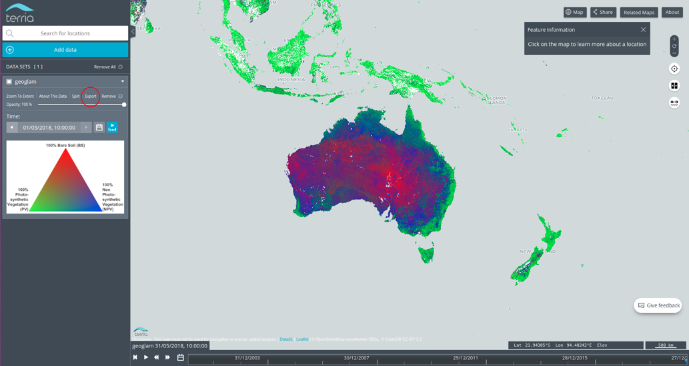Simply draw a bounding box and the raw data corresponding to this selection will be downloadable:
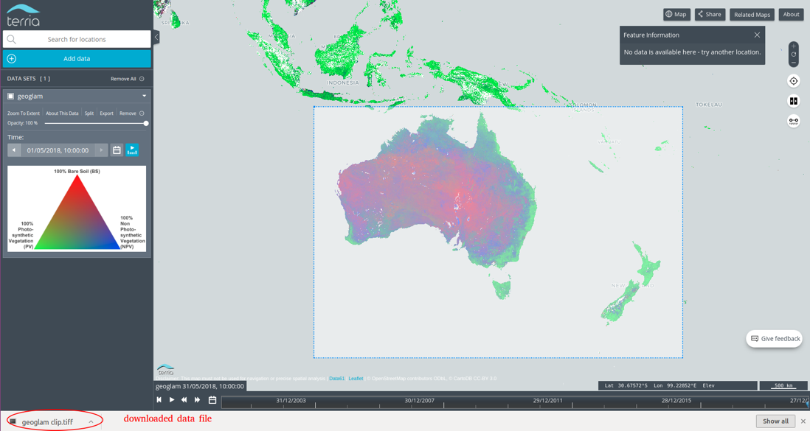The stand-alone visualisation of the downloaded data file, as per the selection made via a click-and-ship:
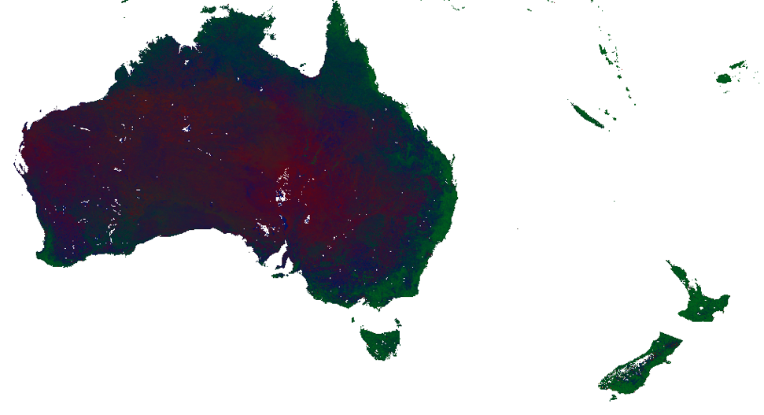National Map web site¶
Go to the National Map website
Click on Add Data -> My Data -> Web Data and type:
http://gsky.nci.org.au/ows/dea
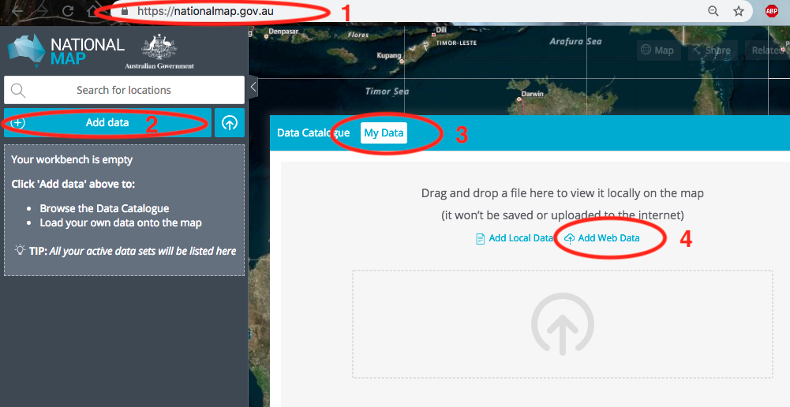 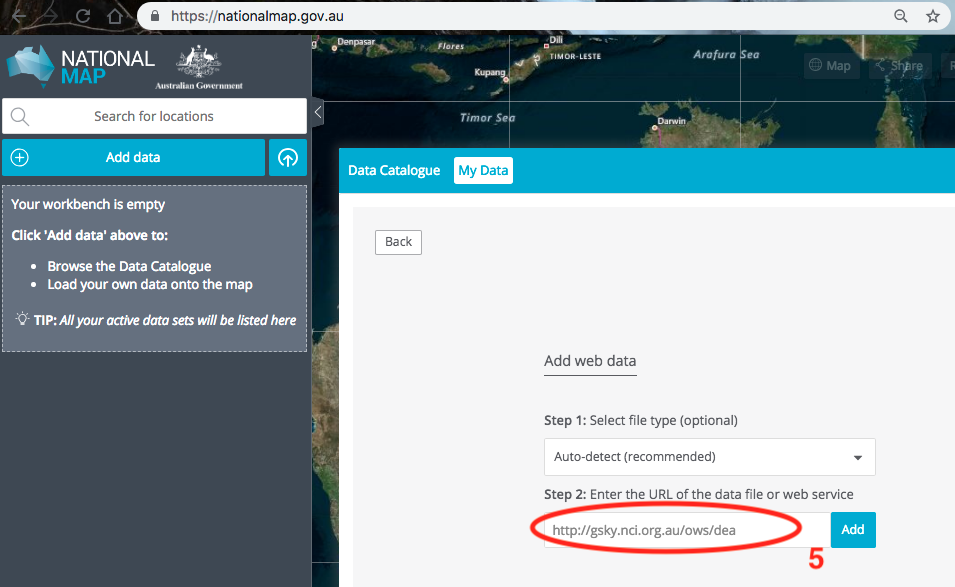GSKY provides a catalogue of all the datasets and links to NCI’s ISO 19115 data catalogue entries:
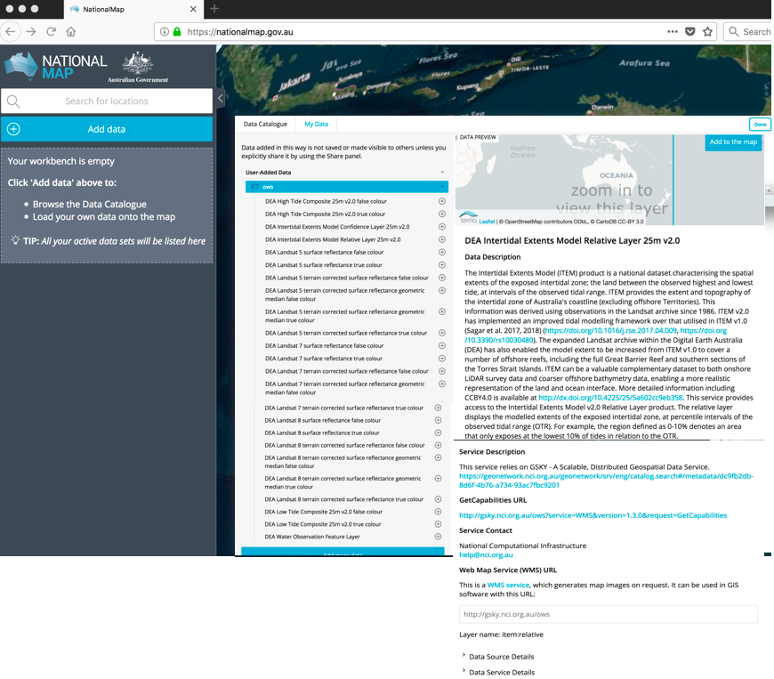You can add multiple datasets to the National Map and plot them on top of each other. Here is an example Landsat 8 terrain corrected surface reflectance true colour data overlain by Water Observations from Space (WOfS) data:
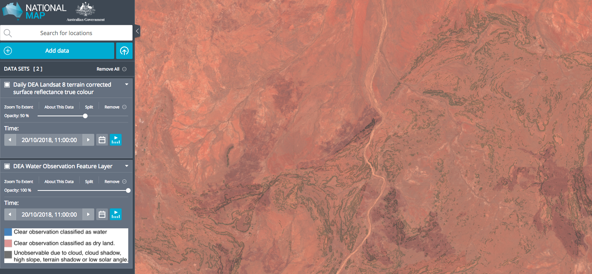The split bar feature allows one to compare different datasets as well as different dates from the same dataset. Below is a example of using the scroll bar, with Landsat 8 geomedian true colour plotted on the left and Landsat 8 geomedian false colour plotted on the right:
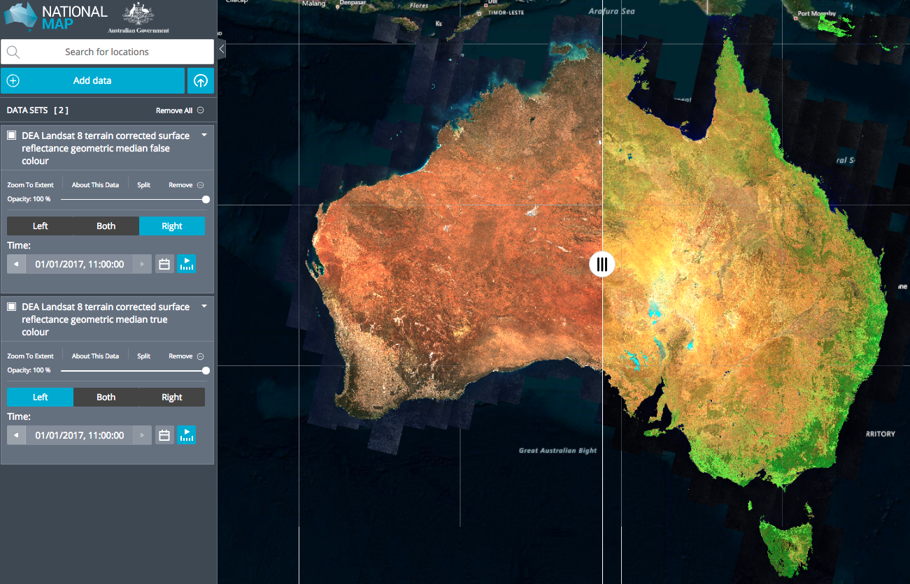Jupyter notebooks¶
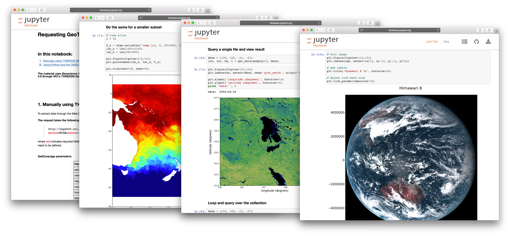Programmatic access through Jupyter notebooks is easy via GSKY’s OGC services. Please see the Jupyter notebooks section for some examples on how to use GSKY in Python. To clone/download these tutorials, please visit our gsky-demos github page.